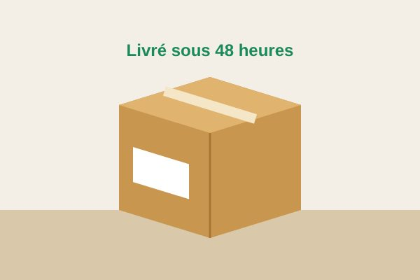

Nos services
Au delà de la délivrance des médicaments,nous vous accompagnons au quotidien.
Conseil pharmaceutique

Posologie, effetes indésirables, interactions entre médicaments:la pharmacienne et son équipe répondent à vos questions, sans rendez vous.
Parapharmacie

Soins du coprs et du visage, hygiène,produits pour bébé, compléments alimentaires: consultez notre catalogue pour savoir ce qui est disponible.
Prise de tension

Gratuite et sans rendez-vous, du lundi au samedi. Le resultat vous est remis sur une fiche à montrer à votre médecin.
Commande d'un produit absent

Si un produit n'est pas en stock, nous le commandons auprès de nos fournisseurs.Ils est en général disponible sou 48 heures.
La vente de médicaments se fait uniquement au comptoir, sur conseil de la pharmacienne et, nécessaires sur présentation d'une ordonnance.
Petit lexique de la pharmacie
- Posologie
- La quantité de médicament à prendre, et à quel moment.
- Ordonnance
- Le document du médecin qui prescrit un traitement.
- Parapharmacie
- Les produits de soin, d'hygiène et pour bébé, vendus sans ordonnance.
- Pharmacie de garde
- La pharmacie qui reste ouverte la nuit, le dimanche ou un jour férié.
Pharmacie Ndèye Coumba.Route principale, à coté du rond-point,Guédiawaye Téléphone: 77 000 00 00. Email: Pharmacie.ndeyecoumba@exemple.sn Ouvert du lundi au samedi, de 8h à 22h Nous trouver sur la carte Projet pédagoqique.